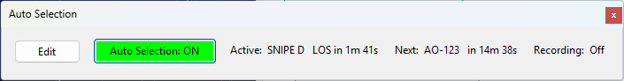
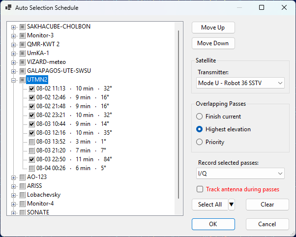

Auto Selection Panel
The Auto Selection panel lets SkyRoof automatically tune to each satellite in a schedule at the start of its pass (AOS) and hold it until the pass ends (LOS), cycling through a set of passes you choose. The selected passes can optionally be recorded, each to its own file, or left unrecorded so that only their live telemetry is decoded as they pass over.
Auto selection works on the current satellite group. Each group keeps its own schedule, so switching groups switches schedules.
Status Panel

The panel shows the live status of auto-selection for the current group:
- Edit — opens the schedule dialog for the current group.
- Auto Selection: ON / OFF — the master toggle. It is disabled until the current group has a schedule, and lights up in green while auto selection is running. Auto selection always starts OFF when the program launches; you turn it on deliberately each session.
- Active — the pass currently tuned, with the time remaining until its LOS, or none when no pass is active.
- Next — the next scheduled pass and the time until its AOS, or none when nothing is coming up.
- Recording — the recording type and elapsed time while a pass is being recorded, or Off when nothing is being recorded.
While auto selection is on, changing the satellite, transmitter, or group by hand stops auto selection and shows a message. Your manual change is applied normally; re-enable auto selection when you are ready.
Closing the Auto Selection panel also stops auto selection, since there is no longer anywhere to monitor or control it.
The Schedule Dialog
Click Edit to open the schedule dialog for the current group.

Rotation Tree
The tree lists every satellite in the group (except geostationary satellites, which have no passes) as a parent node, with its upcoming passes over the next 48 hours as child nodes. Each pass leaf shows its AOS time, duration, and maximum elevation. The AOS time is shown in the zone selected on the Clock widget.
Use the checkboxes to choose which passes take part in the rotation:
- clicking a satellite checkbox selects or clears all of its passes;
- clicking a pass checkbox selects that single pass;
- a satellite checkbox is shown in an indeterminate state when only some of its passes are selected.
The order of the satellite nodes is the priority order (top = highest). Select a satellite and use Move Up / Move Down to change its priority.
Use Select All to check every pass of the group at once, or Clear to uncheck them all. Clicking OK with no passes checked removes the current group's schedule.
To skip the low passes, click the small arrow next to Select All and pick a maximum-elevation threshold from the drop-down menu: Select All, Select > 5º, Select > 10º, Select > 15º, or Select > 20º. Only the passes that rise at least that high are checked. The menu adds to your current selection and never unchecks anything, so click Clear first if you want the threshold to be the only thing selected.
Satellite Settings
Select a satellite node to edit its settings:
- Transmitter — the transmitter to tune when a pass of this satellite is selected.
Overlap Mode
When two selected passes are up at the same time, the overlap mode decides which one is tuned:
- Finish current — once a pass is entered at its AOS, it is held until its LOS, then the next selected pass that is still up is entered.
- Highest elevation — the currently-up selected pass with the greatest elevation is tuned, switching only when another pass is clearly higher (to avoid rapid switching back and forth).
- Priority — the currently-up selected pass whose satellite has the highest priority is tuned; a higher-priority pass rising over the horizon takes over, and when it sets the next-highest still-up pass is entered.
Record Selected Passes
Record selected passes sets how the passes in the rotation are recorded. Like the overlap mode, this option belongs to the schedule rather than to a satellite: it applies to all satellites in the group, and thus to every selected pass. Each satellite group has its own setting:
- Off — do not record. The satellites are still tuned, so live telemetry is decoded during each pass.
- Audio — record the demodulated audio as an
.mp3file. - I/Q — record the complex baseband signal as an
.iq.wavfile.
Track Antenna During Passes
Tick Track antenna during passes to let auto selection also point your antenna at each pass. Like the overlap mode, this option belongs to the schedule, so each satellite group has its own setting.
- When a pass is entered, the antenna starts tracking it and follows it until LOS.
- One minute before the AOS of the next selected pass, the antenna is sent to the pass's rise point ahead of time, so it is already in position when the pass starts. Only the antenna moves at this point; the satellite is not selected or tuned until AOS.
- Outside that one-minute window, auto selection does not touch the rotator between passes, so you are free to move or track the antenna by hand in the gaps. If you click Stop during the pre-roll, the antenna stays where it is until the pass begins.
- Turning Auto Selection off stops the antenna if auto selection was tracking it.
The option takes effect as soon as you click OK: ticking it starts tracking the pass that is currently active, and clearing it stops the rotator.
When the box is not ticked, auto selection never moves the antenna, and you can track passes manually with the Rotator Control panel as usual.
The option requires rotator control to be enabled in the rotator settings. If it is disabled, the checkbox caption is shown in red to warn you that antenna tracking will have no effect until you enable it.
Click OK to save the schedule, or Cancel to discard your changes. Reopening the dialog extends the list to the next 48 hours from that moment, keeping your previously selected passes checked. The newly added passes are unchecked, so they do not join the rotation until you check them yourself.
Recordings
Auto-selection recordings are saved into the Auto subfolder of the Recordings folder inside the
data folder. Each contiguous segment becomes one file, named with its start time and the
satellite name. Audio is saved as .mp3 and I/Q as .iq.wav, the same formats as the
Recorder panel.